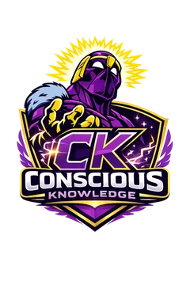
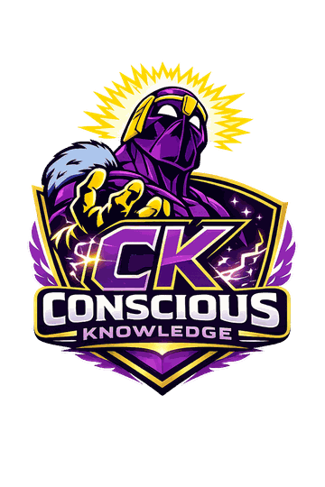
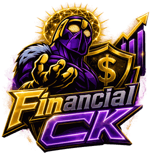
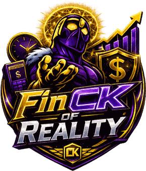

das famílias brasileiras estão endividadas — sexto mês consecutivo no topo da série
Peic/CNC, jul./2026 · 18 mil famílias (AGÊNCIA BRASIL, 2026)

Conscious Knowledge


Projeto Interdisciplinar · Monografia em normas ABNT
Consumo consciente, decisão em tempo real e o impacto do descontrole financeiro na sociedade e no meio ambiente.
Abertura (30 s). Cumprimentar a banca e o Prof. Sullivan, nomear o trabalho e o tema.
Frase de entrada sugerida: “Boa noite. Nosso projeto começa com uma conta que o brasileiro faz errado todos os dias — e termina em um aterro de lixo eletrônico.”
Não ler os seis nomes: a banca já tem a folha de rosto. Ir direto para o slide 2.
01 — O tema proposto
Tema e exigências definidos pelo corpo docente da Etec Taboão da Serra.
É possível reduzir o consumo por impulso e seu impacto ambiental por meio de uma ferramenta que traduza o preço de uma compra para uma linguagem imediatamente compreensível, sem depender de educação financeira prévia?
das famílias brasileiras estão endividadas — sexto mês consecutivo no topo da série
Peic/CNC, jul./2026 · 18 mil famílias (AGÊNCIA BRASIL, 2026)
da renda familiar comprometida, em média, com o pagamento de dívidas
Peic/CNC, jul./2026 (AGÊNCIA BRASIL, 2026)
de inadimplentes, alta de 38,1% em dez anos — 48% recebem até um salário mínimo
Serasa, 2026 (CNN BRASIL, 2026)
Hipótese: traduzir o preço em tempo de trabalho, percentual de renda e efeito sobre metas torna a decisão mais consciente mesmo para quem nunca teve educação financeira.
Gustavo · slide 1 de 2 (~55 s). Deixar claro que o tema foi dado pela escola — consumo desenfreado e natureza — e que as duas exigências valem nota.
Os 48% que recebem até um salário mínimo justificam o público-alvo jovem (seção 4.1 do documento). Guardar esse gancho.
Ler o problema de pesquisa e a hipótese devagar: é o que a banca cobra.
02 — A raiz
Quase todo mundo sabe que o tema importa. Mais da metade admite não entendê-lo. A vontade existe — falta a informação em linguagem que não exija conhecimento prévio.
Fonte: Observatório Febraban / Ipespe, jun./2025 — 3 mil pessoas em cinco regiões (FEBRABAN, 2025).
já compraram por impulso para se sentir melhor emocionalmente.
Serasa / Opinion Box (BORA INVESTIR, 2025)
já acumularam dívidas motivadas por questões emocionais, não por planejamento.
Serasa / Opinion Box (BORA INVESTIR, 2025)
Se o gatilho é emocional antes de racional, disciplina e planilha não resolvem. É preciso interromper o ciclo no instante da decisão.
Gustavo · slide 2 de 2 (~50 s). O contraste 91% × 55% é o argumento: o problema não é desinteresse, é acesso à informação.
Os 46% e 54% derrubam a objeção “basta ter força de vontade” — é o que sustenta a gamificação (seção 4.8 do documento).
Passar a palavra: “O Éric vai mostrar o que alimenta esse ciclo — e onde ele termina.”
03 — O mecanismo
Avalia-se só se “cabe” a parcela do mês, sem enxergar o efeito acumulado de vários parcelamentos somados.
Moda de ciclo curto e obsolescência programada incentivam trocar o que ainda funciona, em vez de reparar.
A etiqueta nunca é traduzida em tempo de trabalho nem em fatia da renda. É este o ponto que o FinCK ataca.
As quatro primeiras já são estudadas e combatidas. A quinta — o custo real invisível — é o ponto cego das ferramentas que existem hoje.
Éric · slide 1 de 2 (~55 s). Percorrer o círculo com a mão e mostrar que ele se fecha.
Não ler as cinco: citar parcelamento e descarte rápido, e parar na quinta — ela é a ponte para a solução.
A “cultura do descarte” já prepara o próximo slide, que é o lado ambiental.
04 — O impacto na natureza
≈ 2,4 milhões de toneladas por ano — e só uma pequena parte vai para reciclagem adequada.
Fonte: Olhar Digital, abr./2026. Posições relativas; o Brasil é o 5º colocado.
“Reduzir substancialmente a geração de resíduos por meio da prevenção, redução, reciclagem e reuso” até 2030.
Fonte: Nações Unidas no Brasil, 2026.
É aqui que o tema fecha: o mesmo impulso que esvazia a conta bancária alimenta, em escala, o descarte precoce.
Éric · slide 2 de 2 (~50 s). Este é o slide que amarra o financeiro ao ambiental — é o coração do tema que a escola pediu.
Dizer o número em voz alta: 2,4 milhões de toneladas por ano, quinto do mundo.
A meta 12.5 fala em prevenção e reuso — guardar, porque o Paulo retoma isso na aplicabilidade local.
05 — A virada
Renda de R$ 1.800 · 22 dias · 8 h por dia →
R$ 81,82 por dia · R$ 10,23 por hora
· 19,4% da renda do mês
Dinheiro é abstrato. R$ 350 não dói — é só um número na tela.
Tempo não é. Trinta e quatro horas é quase uma semana da sua vida.
O FinCK nunca bloqueia e nunca julga uma compra. Ele apenas garante que a decisão seja tomada com todas as informações relevantes antes de ser concluída.
Gabriel · slide 1 de 2 (~50 s). Este é o slide mais importante da defesa. Falar devagar.
O exemplo é o mesmo do capítulo 11 do documento (Matemática, Prof. Sullivan): R$ 1.800, 22 dias, 8 h, item de R$ 350. Se a banca pedir a conta, ela está no documento.
Frase que precisa ficar: “Ninguém troca quatro dias de vida sem pensar. Mas troca R$ 350 sem piscar.”
Dizer “nunca bloqueia e nunca julga” derruba a objeção de app paternalista antes dela surgir.
06 — O motor demonstração ao vivo

valor_dia = renda ÷ dias
valor_hora = valor_dia ÷ horas
custo_horas = preço ÷ valor_hora
Sua hora vale R$ 10,23 · seu dia vale R$ 81,82.
Impacto moderado no mês
O app não para no número — tudo isto sai na mesma tela do resultado:
Gabriel · slide 2 de 2 (~60 s) — DEMONSTRAÇÃO. Começa no exemplo do documento. Trocar o preço ao vivo para R$ 4.000 (celular novo) e deixar a banca ver o semáforo virar.
Girar o prisma com o mouse enquanto fala: as quatro faces mudam juntas.
Se sobrar fôlego, citar o custo por mês de uso: informando quanto tempo pretende usar o item, o app mostra quanto ele custa por mês de uso — é o que separa o barato descartável do caro durável, e a resposta técnica à obsolescência programada do slide 4.
Fechar apontando para a fita embaixo: “o app não para no número — ele sugere a alternativa e mostra o ponto da nossa cidade que resolve. Os dois últimos elos estão na tela do resultado, e o Paulo mostra daqui a pouco.”
Se o tempo apertar: só a troca de preço, sem girar o prisma — mas não pular a fita.
07 — O produto
R$ 1.240,00
≈ 34,2 h de trabalho · 19,4% da renda
O motor de decisão: horas, dias, % da renda, efeito no saldo e em cada meta.
Contas, cartões e lançamentos fixos em uma visão só.
Projeção de saldo, parcelas e teto por categoria.
O que você deixa de gastar vira progresso visível.
Simulações do tipo “e se eu não comprar isso?”.
Indicador de responsabilidade e alternativas ao novo.
Gastos por categoria, período e exportação.
Conquistas por constância, com regras anti-farm.
PWA instalável e funcionando offline — inclusive nesta sala, sem depender do Wi-Fi.
Paulo · slide 1 de 2 (~50 s). Não ler os oito módulos. Citar Reality, Cenários e Decisões/Ações locais, e dizer “e mais cinco”.
“Decisões e Ações locais” está destacado de propósito — é o próximo slide.
O offline não é enfeite: é a garantia de que a demo funciona mesmo se a rede da escola cair.
08 — A exigência resolvida
Não prometemos parcerias comerciais com lojas de Taboão da Serra. Seria uma promessa que um projeto de ensino técnico não teria como sustentar — e nem é a leitura mais correta do tema.
O impacto ambiental de um padrão de consumo é a soma de decisões individuais tomadas por pessoas que moram, trabalham e consomem em um lugar concreto. É ali que o efeito acontece primeiro.
Módulo Ações locais — o usuário registra os pontos que ele conhece na própria cidade:
Não é um diretório comercial do FinCK nem uma rede de parceiros: é uma ferramenta pessoal, cujo conteúdo é definido pelo território real em que cada usuário vive.
Menos resíduo gerado dentro da própria cidade, mais circulação de bens na comunidade — antes de qualquer efeito agregado em escala nacional. É a meta 12.5 aplicada à decisão de uma pessoa.
Paulo · slide 2 de 2 (~55 s). Slide decisivo: a aplicabilidade local é exigência explícita do briefing e vale nota.
Começar pelo que não fizemos — isso mostra critério, não falta de ambição.
Se perguntarem por que não há parcerias: está na seção 4.7 do documento, e aparece na conclusão como frente de continuidade.
Passar: “O Pedro mostra que o app está de pé de verdade.”
09 — A construção
MySQL Workbench, PHP e Xampp para validar a conexão entre HTML/JS e banco.
PostgreSQL no Supabase, com autenticação e acesso por usuário.
Edge Functions em TypeScript/Deno no Supabase e função serverless na Vercel.
Git e GitHub como controle de versão; Vercel com deploy a cada envio.
HTML5, CSS3 e JavaScript puro. Cada linha do projeto é compreendida e defendida pela equipe — não há caixa-preta na entrega. A interface é toda em português, sem anúncios, com foco visível, marcação semântica e alto contraste.
Pedro · slide 1 de 2 (~45 s) — CORRER. A banca não precisa de detalhe técnico; precisa saber que a equipe domina o que construiu.
O ponto forte é a segunda coluna: o briefing exigia produto funcional, e o app está publicado, com banco real e código aberto.
Se perguntarem “por que não usaram framework?”: porque o critério do trabalho é demonstrar domínio, e framework esconde justamente o que precisamos provar que sabemos.
10 — A decisão de arquitetura
Docker, Kubernetes e Swarm; escalonamento vertical e horizontal, autoescalonamento e balanceamento de carga entre instâncias — tudo configurado e mantido à mão.
Disciplina de Computação em Nuvem
Vercel e Supabase entregam o mesmo escalonamento horizontal e o mesmo balanceamento de carga automaticamente. Sem servidor fixo ocioso, sem cluster para manter.
Arquitetura real do FinCK
Foi justamente ter estudado contêineres e orquestradores que permitiu reconhecer, com critério técnico, que o projeto não precisava deles. Para uma equipe pequena de ensino técnico, em um semestre, essa é a decisão tecnicamente mais adequada — não uma alternativa inferior.
A mesma lógica vale para o banco: MySQL local para prototipar, PostgreSQL gerenciado em produção. Em ambos os casos, a escolha não foi a mais elaborada — foi a mais adequada ao contexto real.
Pedro · slide 2 de 2 (~50 s). Este slide responde de véspera a pergunta mais provável da banca técnica: “por que não usaram Docker/Kubernetes?”.
A frase-chave: não foi por não saber — foi por saber.
Está detalhado na seção 10.2 do documento, se quiserem aprofundar.
Passar: “O Thiago fecha com o diferencial e o resultado.”
11 — O diferencial
| Recurso | Mobills · Organizze · GuiaBolso | FinCK |
|---|---|---|
| Momento de atuação | Depois da compra já realizada | Antes, no momento da decisão |
| Preço em tempo de trabalho | Não oferecido | Função central (FinCK of Reality) |
| Indicador de responsabilidade | Não oferecido | Presente |
| Ligação explícita com o ODS 12 | Não oferecido | Presente (Ações locais) |
| Gamificação por XP | Raro ou ausente | Presente |
| Modelo de negócio | Anúncios ou plano pago | Sem anúncios |
Quadro 1 do documento — elaborado pelos autores a partir de observação direta das versões gratuitas dos aplicativos citados (2026).
Não viemos substituir um organizador financeiro. Viemos preencher a lacuna que eles deixam: o instante da decisão de compra e a ligação dela com o impacto ambiental.
Thiago · slide 1 de 2 (~50 s). Não ler a tabela linha a linha — apontar as três linhas em que a coluna do meio diz “não oferecido”.
Ser justo com os concorrentes: eles têm conexão bancária automática, que o FinCK não tem. Isso mostra honestidade e desarma a banca.
A palavra certa é complementaridade de escopo, não superioridade.
12 — O resultado
App publicado, com banco de dados real, autenticação e todas as telas operantes
Ações locais resolvem a aplicabilidade no território de cada usuário
Cada número tem fórmula por trás e cada dado, fonte pública citada
Thiago · slide 2 de 2 (~45 s). Os três selos respondem exatamente ao briefing: funcional, local e rastreável.
As continuidades vêm da conclusão do documento — elas mostram que o projeto tem futuro, não que está incompleto.
Fechar e passar para o encerramento.
O mesmo impulso que esvazia uma conta bancária
é o que enche um aterro de lixo eletrônico.
Conscious Knowledge · Técnico em Informática para Internet · Turma 2ºC · Etec Taboão da Serra · Orientador: Prof. Sullivan Franco · 2026
Encerramento (~20 s). Fechar com a frase das duas pontas do problema e abrir para perguntas.
Deixar este slide na tela durante a arguição: ele tem os nomes, o orientador e os links.
Se pedirem as fontes: apertar R ou clicar em “Referências”.
Lista reduzida às fontes citadas nesta apresentação. A relação completa está nas Referências do documento do projeto, junto das obras consultadas sobre arquitetura de sistemas, contêineres e computação em nuvem.
No celular ou no tablet, deslize para os lados para trocar de slide.